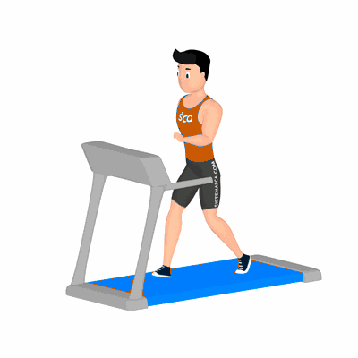

Esteira

Exercício aeróbico para perda de peso com a prática continuada. Auxilia no fortalecimento dos músculos cardíacos, melhora na circulação sanguínea e condicionamento físico.
Ficha Técnica
Tipo: Aeróbico
Grupo Muscular: Corpo
Aparelho: Nenhum
Músculos: Nenhum
Como realizar
- Suba na lona;
- Pés na lateral da esteira, ligue-a e inicie uma caminhada leve;
- Manter postura ereta e abdômen contraído durante toda execução;
- Quando aumentar o ritmo da corrida, aumente a intensidade da respiração;
- Ao termino do tempo prescrito pelo professor, diminua gradualmente a velocidade para uma caminhada leve.
 RC STORE
RC STORE